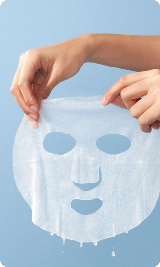
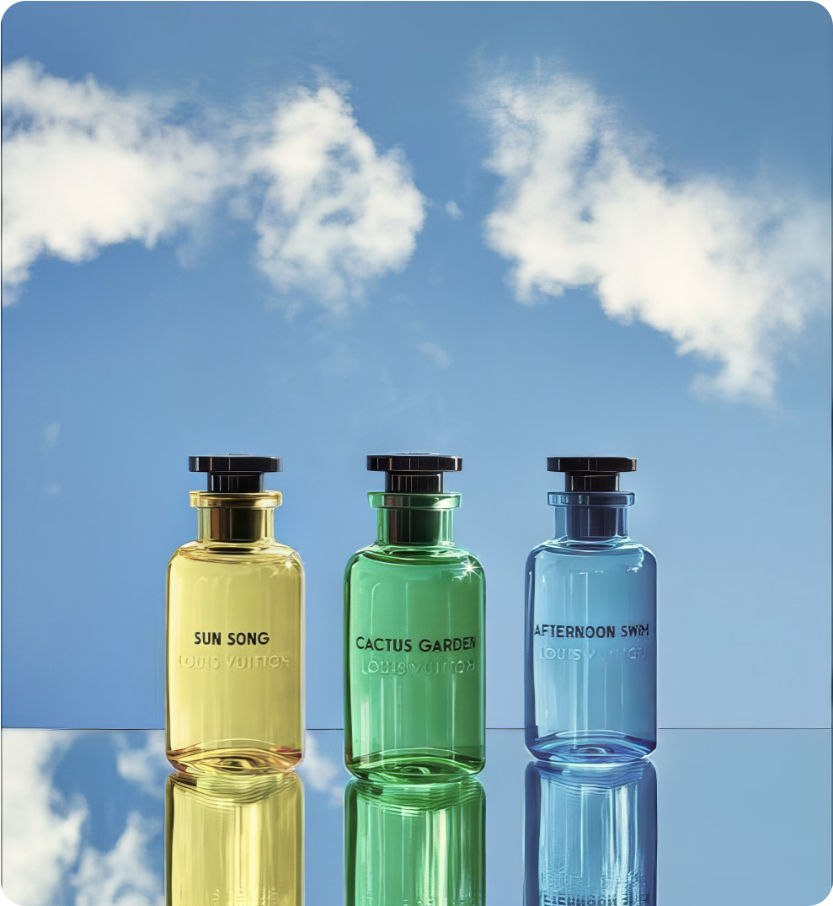

19 марта 2024
уход
увлажнение
советы
Эффективное увлажнение кожи играет важную роль в ее здоровье и красоте. Для достижения оптимального уровня увлажнения кожи, важно проводить комплексный уход, включающий несколько аспектов.
Использование увлажняющих средств
Использование увлажняющих средств является одним из основных способов обеспечить увлажнение кожи. Увлажняющие средства, такие как кремы, лосьоны, сыворотки и масла, содержат ингредиенты, способствующие удержанию влаги в коже и созданию защитного барьера. Вот как увлажняющие средства способствуют увлажнению кожи:
1. Удержание влаги: увлажняющие средства содержат ингредиенты, такие как гиалуроновая кислота, глицерин, мочевина и другие увлажняющие компоненты, которые помогают удерживать влагу в верхних слоях кожи, предотвращая ее испарение и создавая ощущение мягкости и увлажненности.
2. Восстановление барьерной функции кожи: некоторые увлажняющие средства содержат ингредиенты, способствующие восстановлению защитного барьера кожи, что помогает предотвратить потерю влаги и защищает кожу от внешних агрессивных факторов.
3. Питание и смягчение: многие увлажняющие средства содержат также питательные масла, витамины и другие компоненты, которые помогают смягчить и улучшить состояние сухой или обезвоженной кожи.
Питье воды
Питье воды имеет прямое влияние на увлажнение кожи. Когда организм получает достаточное количество воды, это способствует увлажнению кожи изнутри. Вот как питье воды влияет на увлажнение кожи:
1. Увлажнение клеток кожи: вода, поступающая в организм, попадает в клетки кожи, помогая им поддерживать оптимальный уровень влаги и функционировать правильным образом.
2. Регулирование температуры кожи: вода играет ключевую роль в регулировании температуры тела, предотвращая пересушивание и обеспечивая комфортное увлажненное состояние кожи.
3. Очищение организма: питье достаточного количества воды помогает организму избавляться от токсинов и шлаков, что также положительно сказывается на общем состоянии кожи.
Организму рекомендуется употреблять в среднем от 2 до 3 литров воды в день, в зависимости от физической активности, климатических условий и индивидуальных потребностей. Питье воды следует рассматривать как важную составляющую ухода за кожей, поскольку это способствует ее увлажнению «изнутри» и является дополнительным способом поддержания здорового и сияющего внешнего вида кожи.
 
Защита от вредных факторов
Защита кожи от вредных факторов является важным аспектом обеспечения ее увлажненности. Воздействие внешних факторов, таких как солнечное излучение, ветер, холод, загрязнение и другие агрессивные вещества, может привести к потере влаги и обезвоживанию кожи. Поэтому защита кожи от подобных факторов является неотъемлемой частью ухода за ней и способствует сохранению ее увлажненности.
Правильный уход за кожей
Правильный уход за кожей играет важную роль в увлажнении кожи. Включение в регулярный уход увлажняющих процедур и продуктов способствует сохранению уровня влаги в коже. Вот несколько основных принципов правильного ухода за кожей для обеспечения ее увлажнения:
1. Очищение: используйте мягкие очищающие средства, подходящие для вашего типа кожи. Это поможет удалить загрязнения, избыток масла и макияж, не пересушивая кожу.
2. Эксфолиация: регулярное удаление отмерших клеток кожи помогает улучшить ее текстуру и способствует лучшему проникновению увлажняющих средств.
3. Увлажнение: используйте увлажняющие средства, такие как кремы или лосьоны, чтобы предотвратить обезвоживание кожи и сохранить ее упругость. Выберите продукты, содержащие увлажняющие компоненты, такие как гиалуроновая кислота, глицерин или мочевина.
4. Защита от солнца: используйте солнцезащитные средства, чтобы защитить кожу от вредного воздействия ультрафиолетовых лучей, что поможет сохранить ее увлажненность и предотвратит преждевременное старение.
Обратите внимание, что эффективное увлажнение кожи - это процесс, требующий последовательности и регулярности. Выберите продукты и методы, подходящие для вашего типа кожи, и следуйте этим рекомендациям для достижения здоровой и увлажненной кожи.